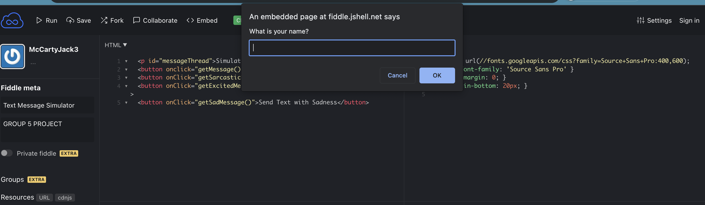
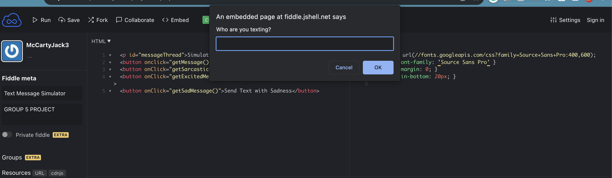
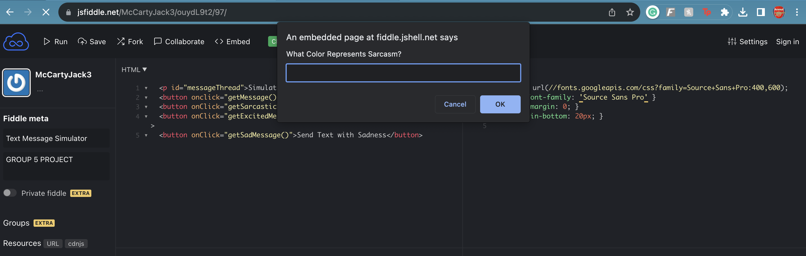
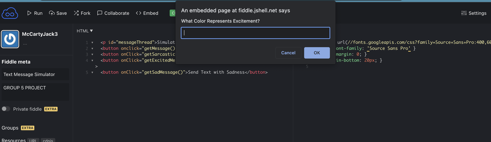
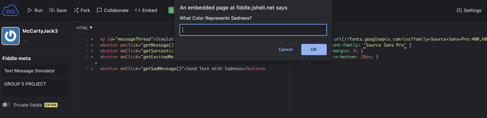
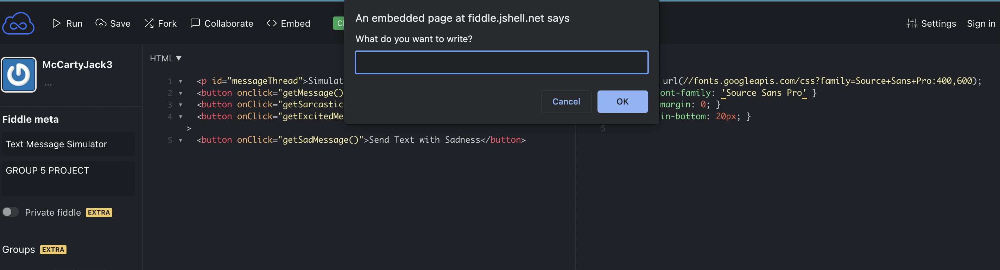
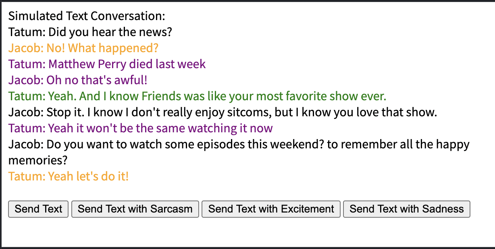

Step 1: First the user will open up the link to access our program.
Step 2: Answer the question: What is your name?

Step 3: Answer the Question: Who are you texting?

Step 4: You will be asked what colors will be representing the different tones offered.



Step 5: Using the features, craft a text to be sent to the other person with or without the use of sarcasm. The color will then be attached to the message you have sent.
By clicking the send text button, you are able to write a message to whoever you are texting. Meanwhile, using the send text with sarcasm button displays the same question first before adding color to your message.

Step 6: Using the features and the selections you have chosen, you can have a sample conversation with the interpretation of tone based on your choices.
Take a look at the sample conversation below with the following choices:
Sarcasm = green
Excitement = orange
Sadness = purple

Our intended user population is anyone who may have difficulty communicating with others via text message. This includes but is not limited to, neurodivergent users, generational gaps between users, and anyone else who may have difficulties understanding tones in messages. Although our system could potentially be more helpful to these users it can be used by anyone with the goal of making their messages easier to understand.
1. Our first goal is to be user-friendly. Being easy to understand, and easy to use is extremely important for any prototype. However, it is crucial for ours because it is intended for people of all ages and all ranges of technological experience.
2. Another goal is to be consistent. We want to make sure that the same, and correct, tone is being conveyed from sender to recipient. This will reduce confusion amongst our users. Reducing confusion is very important, if not the most important thing when working with a communication system.
3. Our next goal is to be accessible to all users. We want to allow the use of colors that are friendly to people who have color blindness and/or other vision afflictions. This is a combination of being both user-friendly and trying to avoid confusion for users with disabilities.
1. How many examiners are required?
2-3 examiners should be enough to conduct an Usability Test succesfully.
2. What equipment will the examiners need?
They should just need a laptop for using the protoptype and maybe a notebook to write down anything of note.
3. How should your prototype be handled? (manual/documentation)
Our prototype is fairly easy to use and pretty robust so as long as the people testing the product are following the User Manuel there should be no issues or complication.
4. How will you instruct your examiners to proceed?
We think it would be best for them have a mostly obsevatory role and only jumping in when they think it is neccessary or the testers have questions.
5. How should the examiners treat the test subjects, what should they tell them?
For the most part the examiners should only tell the test subjects how to use the product if they have questions but they should mostly stick to referencing the user manuel for questions and then let the testers figure out the program to see how usable it is.
6. What should the examiners avoid doing?
Try to avoid explaining things that aren't stated in the user manuel. We want our product to be intuitive so ideally people should be able to figure out how to use it with just the manuel.
7. What should the examiners avoid telling the test subjects?
Again try and avoid explaining anything outside of the user manuel. We want the product to be intuitive to use and if it isn't we would want to update our user manuel.
8. What/How/When should the examiners measure?
Examiners should take note if anyone seems confused or lost while using the product. Particulary if they ask any questions about how to use certain features. It would also be good to note if it feels like testers are having a better conversation because of the product or if it feels mostly the same.
1. We can test new users setting up the system for the first time, see if they are able to complete it, and then ask them for feedback afterward. This will help identify any universally confusing areas in the design. We will know when the benchmark has been hit when we can consistently get new users to have zero problems while setting up for the first time.
2. We will ask users to interact with another person using our system. We will know we hit the benchmark for our second goal when we can monitor the system interface and interactions within the system. Once elements of the user interface are consistent for all users, and at least 90% of user interactions are consistent in terms of input and output, then we will have completed this task.
3. We will ask color-blind users to communicate with others using our system. We will know we reached our benchmark goal for accessibility when we have at least 90% of users report no confusion or communication issues.
1. Does the range of colors make sense to the user to use?
2. Do the users understand how to make a message turn a certain color/tone?
3. What can be made more clear to make the program more effective and user-friendly?
4. Can the users have a clear conversation using the tones provided?
User 1:
- First set up ran with little issues. Slight confusion over the question “who are you talking to” since he was not actually communicating with anyone. However, other than that the setup was pretty intuitive.
- Next, I had him interact with me through the system. We had a small text conversation with no verbal communication between us. He said the tones helped him actually understand/feel the emotion coming through the conversation. He suggested that it might be easier for users to be able to click on an already sent text and change the tone/color of that.
-My dad is color blind. The fact that he was able to select his colors at the beginning means that he was able to choose the colors that do not give him trouble visually. He reported no issues distinguishing colors from each other.
User 2:
- User was able to successfully follow the user manual to use the prototype
- Asked a couple of questions about what certain buttons did but didn't seem confused
- Didn't react to much while using the prototype
- Not much feedback was given
- Thought the design was easy to use
- Didn't seem to think the design would their conversations better or worse
User 3:
- User was able to successfully follow the user manual to use the prototype
- Didn't ask any questions and seemed to understand the prototype well
- Seemed to enjoy using the prototype
- Wishes the display screen was bigger
- Thinks it would be helpful for understanding conversations
- Wants more tone options
User 4:
- User was able to successfully follow the user manual to use the prototype
- Was a little bit confused but didn't ask any questions and eventually figured it out
- Found the prototype frustrating
- Didn't seem to enjoy using the prototype
- Felt like the prototype was clunky
- Wishes they could change the tone of a message after sending it
- Wanted the option of changing tones after writing a message
User 5:
- User was able to successfully follow the user manual to use the prototype
- Didn't ask any questions and seemed to understand the prototype well
- Had fun creating different conversations
- Enjoyed using the prototype
- Wishes they had it for conversations
- Wants to be able to send longer messages and have a larger text field
- Wants to be able to send emojis and images with tones
Overall, the analysis of user experiences with the prototype yielded a range of insights from the five of our users. We can see there were some differences in opinions but the results show us how users will interact with our program.
In summary, the analysis of user experiences with the prototype presents a diverse range of insights. While User 1 found the setup intuitive with minimal issues, his suggestion to enable tone modification for sent messages adds a valuable dimension to user customization. Furthermore, addressing User 3's desire for a larger display screen and more tone options would contribute to an enhanced user experience.
The feedback from User 4 about the prototype feeling clunky and their frustration underscores the importance of refining the design for smoother usability. Considering User 5's positive experience and enthusiasm, integrating additional features like support for longer messages, emojis, and images could further elevate the prototype's appeal and functionality.
The call for clarity in the user manual, based on User 4's experience, emphasizes the need for comprehensive and user-friendly instructions to facilitate a seamless process.
This insightful set of user experiences highlights specific suggestions and concerns, including enabling tone modification, improving display screen size, refining the design for smoother usability, and incorporating additional communication features. Addressing these elements through an iterative design is paramount for refining the design and ensuring that the final product aligns closely with user expectations and preferences.
Moving forward, we must be sure to keep these factors in mind while designing as we are providing usability for the user and not only us designers.